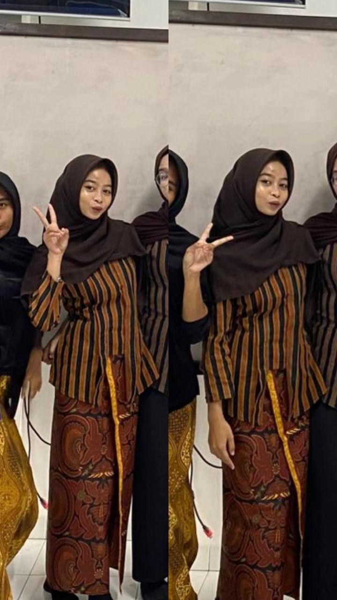

Diva Nadiatu Shefira
sekolah | SMA GUNUNG MADU
BIODATA DIVA IMUT
Nama
Diva Nadiatu Shefira
Tempat Lahir
Mulya Asri
Tanggal Lahir
2 Januari 2008
Umur
17 Tahun
TENTANG DIVA CANTIK
Nama saya diva nadiatu shefira saya berasal dari mulya asri tulang bawang barat dan saya anak ke 2 dari 3 bersodara. saya sekolah sd di tunas asri tahun 2014-2020 lanjut ke smp tbb tahun 2020-2023 dan saat ini saya sekolah di SMA gunung madu dari 2023 sampai dengan 2026. Saya adalah seorang pelajar yang penuh rasa ingin tahu dan selalu bersemangat untuk mencari hal-hal baru terutama di bidang makeup, fashion, dan kuliner. Dengan senang hati, saya terus mengembangkan kemampuan untuk mencari dan menciptakan ide-ide kreatif,saya mempunyai cita cita yaitu menjadi owner skincare tetapi saya rasa mempunyai bakat di make up.
HOBI INCES DIVA
Make Up
Scroll TikTok
kuliner seblak
SOSIAL MEDIA DIVA 👸
PENCAPAIAN 👑
Juara 1 Lomba menari saat smp umtuk menyambut bupati
Tahun 2022
ranking 2 saat kelas 1 sd,semester 1,ranking 3 semester 2,ranking 2 kelas 2 semester 1,ranking 1 kelas 2 semester 2
Tahun 2014-2015
juara 2 membaca puisi kelas 6 sd
2020